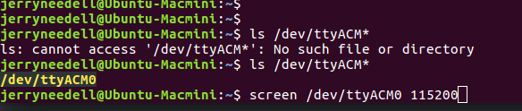

Using the Serial Port from the Command Line

screen
You can use a simple command screen [port] [speed] to talk with things connected to a serial port.
You might have to install it: sudo apt-get install screen
Once you start screen, it will run (even in the backgound) until you kill it:
screen [port] [baud]: start a sessionscreen -r: if you disconnected from a screen session, this will allow you to reattachctrl-a d: detach to get back to the terminal and do other things. Note thatscreenis still running in the background and you must reconnect to access the serial port againctrl-a k: this outright kills ascreensession and disconnectscreenfrom the serial portctrl-a ?: printscreenhelp